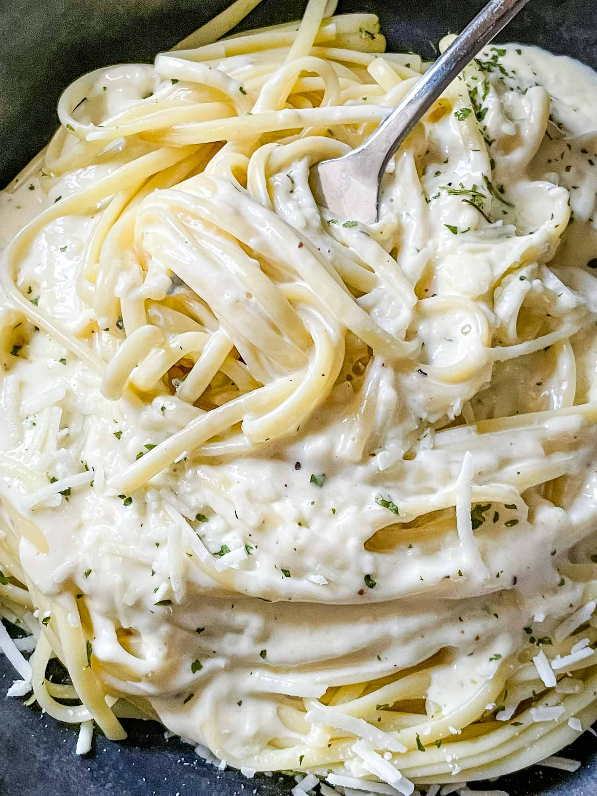

Alfredo Linguini

Alfredo linguini is one of the simplest dishes you can make. It is an
easy dish to make that is sure to please any guest or if you are looking to make
a quick bite. It can be used to elevate a main course as a side dish or as the main course
itself!
The following recipe is sure to be a big hit with whomever you decide to eat with.
Follow along with this simple and easy recipe!
Ingredients
- 1 lb. Linguini Noodles
- 2 cups Heavy Cream
- 1/4 lb. or 1 stick Butter
- 1 1/2 cups Parmesan Cheese
- Black Pepper
- 1/4 tsp. Ground Nutmeg
Steps
- Cook linguini using the instructions on the box. When finished drain and set aside.
- Combine butter and heavy cream in a large pot. Heat over medium until butter melts
- Turn heat down to medium low. Add nutmeg to mixture and whisk to combine.
- Add parmesan cheese to mixture. Salt and Pepper to taste.
- Add pasta to sauce and toss to combine. Let cook for 2-3 minutes.
- Mix with any add-in ingredients.
- Serve and enjoy!